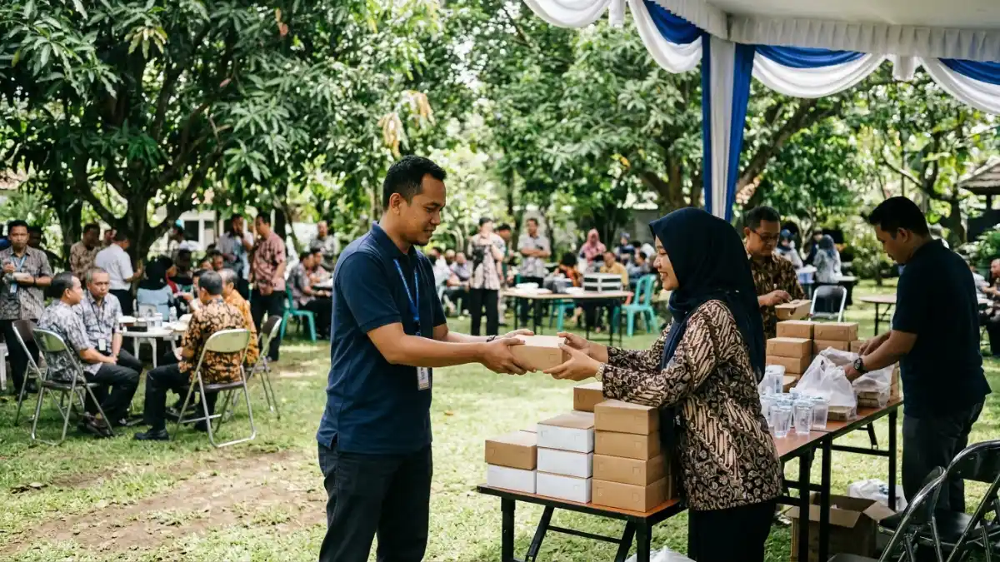

Cara menyajikan makan siang rapat outdoor yang efektif adalah memilih format sesuai jumlah peserta, menata meja di area teduh, mengatur alur antrean, dan menyediakan pengelolaan sampah.
- Pilih format penyajian berdasarkan jumlah peserta, ruang, dan suasana rapat.
- Tata meja saji di area teduh dengan jalur masuk dan keluar yang jelas.
- Alur antrean yang terencana menghemat waktu dan menjaga jadwal rapat.
- Sediakan titik cuci tangan dan tempat sampah terpisah untuk menjaga kebersihan.
- Porsi yang tepat dan pengelolaan sisa makanan mengurangi pemborosan.
DAFTAR ISI
- 1. Bagaimana Memilih Format Penyajian yang Tepat untuk Rapat Outdoor?
- 2. Bagaimana Cara Menata Meja Saji di Luar Ruangan?
- 3. Bagaimana Mengatur Alur Antrean agar Tidak Memakan Waktu Rapat?
- 4. Bagaimana Menjaga Kebersihan dan Mengelola Sampah Saat Penyajian?
- 5. Bagaimanakah Cara Meminimalkan Limbah Makanan Selama Acara Makan Siang Rapat Outdoor?
- 6. Apa Peralatan Penting yang Perlu Disiapkan untuk Penyajian Outdoor?
- 7. Kesimpulan
- 8. FAQ
1. Bagaimana Memilih Format Penyajian yang Tepat untuk Rapat Outdoor?
Pilih nasi box untuk kelompok besar dan rapat formal, prasmanan untuk kelompok menengah yang beragam, dan finger food untuk rapat santai yang berlangsung sambil berdiri atau berjalan.
Nasi box memudahkan distribusi karena setiap peserta menerima porsi seragam dalam kemasan tertutup. Cocok untuk kelompok sekitar 30 orang ke atas atau saat waktu makan sangat singkat.
Prasmanan memberi kebebasan memilih lauk dan porsi, tetapi memerlukan meja panjang, petugas, dan pengawasan suhu makanan.
Finger food, seperti lemper, risoles panggang, sate mini, atau sandwich, cocok untuk sesi networking atau rapat santai karena dapat dimakan tanpa piring dan sendok. Kelemahannya adalah kurang mengenyangkan, sehingga perlu jumlah camilan lebih banyak.
Pertimbangkan kondisi lokasi: bila tidak ada meja dan kursi cukup, nasi box dan finger food lebih mudah diatur.

Pembagian nasi box dengan tanda jalur distribusi yang rapi mempercepat waktu makan dan meminimalisir penumpukan peserta rapat. (Ilustrasi)2. Bagaimana Cara Menata Meja Saji di Luar Ruangan?
Tata meja saji di area teduh, jauh dari tempat sampah, dengan urutan makanan dari piring hingga minuman, dan sisakan ruang sirkulasi agar antrean tidak menghalangi area rapat.
Letakkan meja di bawah tenda atau pohon rindang agar makanan tidak terkena sinar matahari langsung. Gunakan taplak yang bersih dan pemberat agar tidak beterbangan.
Organisasikan susunan berikut secara berurutan: piring, nasi atau sumber karbohidrat, lauk pauk, sayuran, buah-buahan, minuman, serta peralatan makan. Urutan ini membuat antrean mengalir satu arah.
Pisahkan meja makanan dari meja minuman agar tidak terjadi penumpukan di satu titik. Sediakan sendok saji khusus untuk setiap hidangan, dan tudung saji untuk makanan yang tidak sedang diambil.
Beri jarak yang cukup antara meja saji dan area rapat untuk menghindari tumpahan pada dokumen dan perangkat.
3. Bagaimana Mengatur Alur Antrean agar Tidak Memakan Waktu Rapat?
Pengaturan alur antrean dilaksanakan melalui pembukaan dua jalur pelayanan, pembagian peserta menjadi beberapa kelompok, dan penempatan petugas yang bertugas mengarahkan peserta dalam antrean, sehingga memastikan seluruh peserta mendapatkan pelayanan dalam jangka waktu yang singkat.
Untuk kelompok di atas sekitar 40 orang, satu jalur prasmanan sering menimbulkan antrean panjang. Buka dua sisi meja atau sediakan dua jalur paralel.
Alternatif lain adalah membagi peserta ke dalam kelompok berdasarkan nomor meja atau tim, yang dipanggil bergantian.
Untuk nasi box, siapkan titik pembagian yang jelas dengan daftar nama atau tanda pengenal. Petugas sebaiknya membagikan box ke tiap meja agar peserta tidak perlu berdiri antre.
Pastikan petugas mengetahui lokasi paket khusus, misalnya vegetarian atau bebas alergi, agar tidak tertukar. Mulai penyajian tepat waktu karena keterlambatan membuat jadwal rapat bergeser.
4. Bagaimana Menjaga Kebersihan dan Mengelola Sampah Saat Penyajian?
Sediakan titik cuci tangan, tisu basah, serta tempat sampah terpisah untuk sisa makanan dan kemasan, lalu tugaskan petugas yang rutin membersihkan area makan selama acara.
Titik cuci tangan di dekat meja saji mendorong peserta membersihkan tangan sebelum makan. Tempat sampah sebaiknya diberi penutup dan diletakkan agak jauh dari meja saji agar tidak menarik lalat. Pisahkan sampah organik, kemasan plastik, dan kertas bila fasilitas pengelolaan di lokasi tersedia.
Petugas kebersihan perlu membersihkan tumpahan dengan segera dan mengganti kantong sampah sebelum penuh.
Setelah acara, pastikan area dibersihkan dan sampah dibawa ke tempat pembuangan yang sesuai. Lokasi di taman atau kebun wisata biasanya memiliki aturan kebersihan tertentu, jadi periksa ketentuan pengelola.
5. Bagaimanakah Cara Meminimalkan Limbah Makanan Selama Acara Makan Siang Rapat Outdoor?
Kurangi sisa makanan dengan menghitung porsi akurat, menyajikan bertahap, memilih porsi standar, dan menyiapkan rencana donasi atau pembagian makanan layak konsumsi yang aman.
Menurut UNEP Food Waste Index Report 2024, dunia membuang sekitar 1,05 miliar ton makanan pada 2022, dan sekitar 28 persen di antaranya berasal dari sektor layanan makanan seperti restoran, katering, dan acara. Data ini menunjukkan bahwa penyelenggaraan makan bersama berkontribusi nyata terhadap limbah makanan.
Untuk menguranginya, konfirmasi jumlah peserta sebelum memesan, dan gunakan porsi standar. Pada prasmanan, isi wadah secara bertahap agar makanan tidak menumpuk dan rusak.
Bila ada makanan layak yang belum disentuh, pertimbangkan membagikannya kepada panitia, petugas lokasi, atau lembaga sosial, selama masih dalam batas waktu dan suhu yang aman. Makanan yang sudah terlalu lama terbuka sebaiknya dibuang demi keamanan.
6. Apa Peralatan Penting yang Perlu Disiapkan untuk Penyajian Outdoor?
Peralatan penting meliputi meja dan taplak, tudung saji, cooler box, wadah penghangat, sendok saji, piring dan alat makan, tisu, tempat sampah, serta tenda atau kanopi.
Meja dan taplak membentuk area saji yang rapi. Tudung saji melindungi dari lalat dan debu. Cooler box menjaga buah, sayur, dan minuman tetap dingin.
Wadah penghangat menjaga hidangan hangat di atas suhu aman. Sendok saji terpisah mencegah kontaminasi silang antar hidangan.
Siapkan juga barang cadangan seperti serbet, tisu basah, kantong sampah, dan sabun cuci tangan. Daftar peralatan sebaiknya dicek satu per satu sehari sebelum acara.
Barang kecil yang terlupakan, seperti sendok saji atau pemberat taplak, sering menimbulkan kendala di lapangan.
7. Kesimpulan
Penyajian makan siang rapat outdoor yang baik bertumpu pada format yang sesuai jumlah peserta, meja saji di area teduh, alur antrean yang jelas, dan kebersihan yang terjaga.
Hitung porsi secara akurat untuk mengurangi sisa makanan, siapkan peralatan lengkap, dan tugaskan petugas yang mengawasi area makan. Dengan persiapan ini, makan siang berjalan cepat dan rapat tetap tepat waktu.